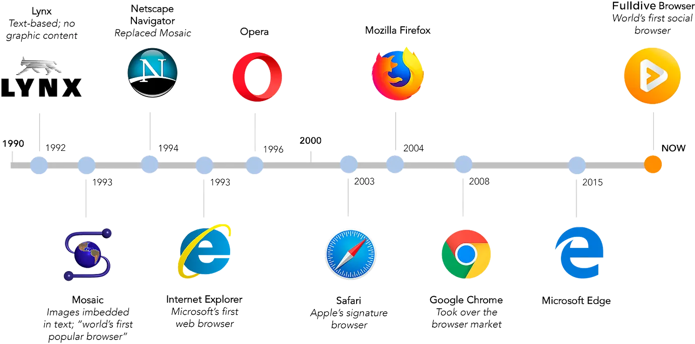

How the Browser Shaped the Internet
As the browser was originally used to help users organize and handle large amounts of data, it was previously focused on making certain connections between pieces of data that were related which was an idea derived by Vannevar Bush’s “Memex” (Pachenka and Harrelson, 2024). Tim Bernes-Lee made the first browser and web server in 1990 which allowed the internet to become useable even beyond just the research environments.
The ease of use with a browser allowed users to access several documents more easily and allowed people to publish documents for anyone to access on the internet (Grech, 2001). As the internet expanded, other browsers were developed and a period of “browser wars” ensued with various companies adding new features and improving their overall performance in a bid to have their browser used the most, but it came with some issues like cross-platform compatibility issues.
These “browser wars” did bring on the development and introduction of CSS, JavaScript and document object model (DOM) which allowed the websites to be more interactive and look better. Due to the various changes additions and issues the web standards like W3C were implemented. This allowed for no browser to truly and fully control the entire internet.
Impact of Browsers on the Internet
